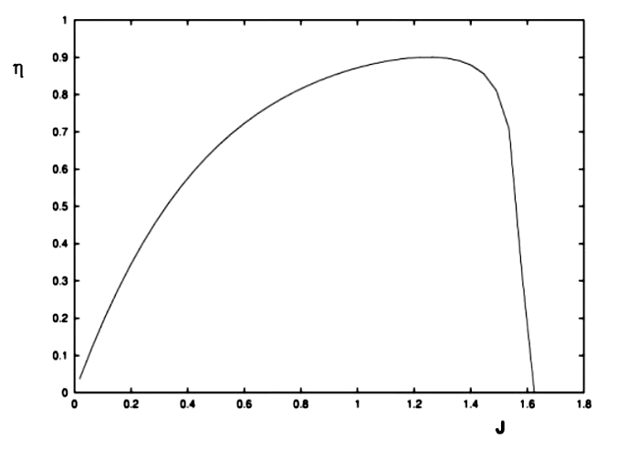

ENGINE THRUST AND POWER>
Thrust to overcome drag is produced by engines generally using one of the following configurations,
Reciprocating Piston Engine driving a propeller.
Gas Turbine Engine driving a propeller (turbo-prop).
Podded High By-Pass Gas Turbine (subsonic) (turbo-fan).
Internal Low By-Pass Gas Turbine (supersonic) .
Propeller Thrust
For cases (1) and (2) engine horsepower performance data will be provided from the engine manufacturer. To find thrust, a reasonable estimate of propeller efficiency is required.
Propeller efficiency can be measured against advance ratio ($J$) , the ratio of forward to rotational speed of the propeller,
$$J=V/{nD}$$
where $V$ is forward speed of aircraft, $n$ is the propeller rotation speed in revs/sec and $D$ is the diameter of the propeller.
A typical fixed pitch propeller performance graph will be as shown in the following Figure.

Propeller
Efficiency versus Advance Ratio.
For detailed methods of calculating propeller performance see the chapter on Blade Element Theory.
Typically maximum efficiency will be around 80% and for a fixed pitch propeller this will be achieved at an advance ratio corresponding to cruise speed and engine RPM settings. As the advance ratio at take-off is lower this may result in a take-off propeller efficiency of only 50%.
By using a constant speed unit on the engine and thus varying the pitch in flight it is possible to maintain high efficiency for a range of advance ratios. The propeller will then run at maximum efficiency (80%) from take-off speed, through climb speed to cruise and high speed cruise. The constant speed units typically have a fixed range of pitch change so that again below take-off speed and above high speed cruise the propeller efficiency will rapidly decline.
More advanced turbo-prop units have a greater pitch range including the options of reverse thrust and feathered (aligned with airflow, min drag with no rotation) positions.
Given values of the propeller efficiency, the engine horsepower output and the speed of the vehicle, thrust produced by the propeller can be predicted by,
$$T={P_{shaft} × η}/V$$
Engine Power output must be obtained from engine manufacturer's datasheets and must include the effects of altitude and temperate to obtain an accurate value for any particular flight condition.
Turbine Engine Thrust
For Gas Turbine aircraft, thrust output will be obtained directly from the manufacturer's charts. In many cases this will only quote static sea level thrust ( $T_{static}$ ). If this is the case, then estimates of thrust at altitude or high speed must be made. Variation of static thrust with altitude can be approximated as,
$$T_{alt}/T_{ssl} = (ρ_{alt}/ρ_{ssl})^n$$
where $n$ varies between 0.7 at sea level and 1.0 at cruise conditions in the stratosphere.
Thrust variation with speed is approximately linear between static and cruise conditions,
$$T_v=T_{static}-KV$$
The gradient $K$ is relatively small and would require detailed manufacturer's engine operating data to define exactly.
In all cases, for all engines, when the aircraft is in equilibrium at steady level flight,
Thrust (T) = Drag (D)
Power Requirements
The power required to keep an aircraft in steady level flight is,
$$P=T×V$$
or
$$P=D×V$$
$$P=C_D1/2ρV^3S$$
Then substituting for $C_D$ variation,
$$P=C_{D0}1/2ρV^3S+KC_L^2 1/2ρV^3S$$
for level flight L = W, so
$$P=C_{D0}1/2ρSV^3+KW^2/{1/2ρSV}$$
In terms of velocity dependent components,
$$P=K_1V^3+K_2V^{-1}$$
This fourth order curve will have a minimum value which can be found by differentiation,
$${∂P}/{∂V}=3K_1V^2-K_2V^{-2}=0$$
Thus for minimum power, $3K_1V^3=K_2V^{-2}$ ,
$$3/2ρC_{D0}V^2={KW^2}/{1/2ρV^2S}={KC_L^2ρ^2S^2V^4}/{1/2ρV^2S}=KC_L^2 1/2ρV^2S$$
canceling terms in $ρ, S, V^2$ and $½$ gives,
$$3C_{D0}=KC_L^2$$
or
$$C_{Di}=3C_{D0}$$
Power required versus airspeed is shown in the following Figure.
The minimum power speed of the aircraft is typically 76% of the minimum drag speed.
{kind=link}
Power Required versus Airspeed